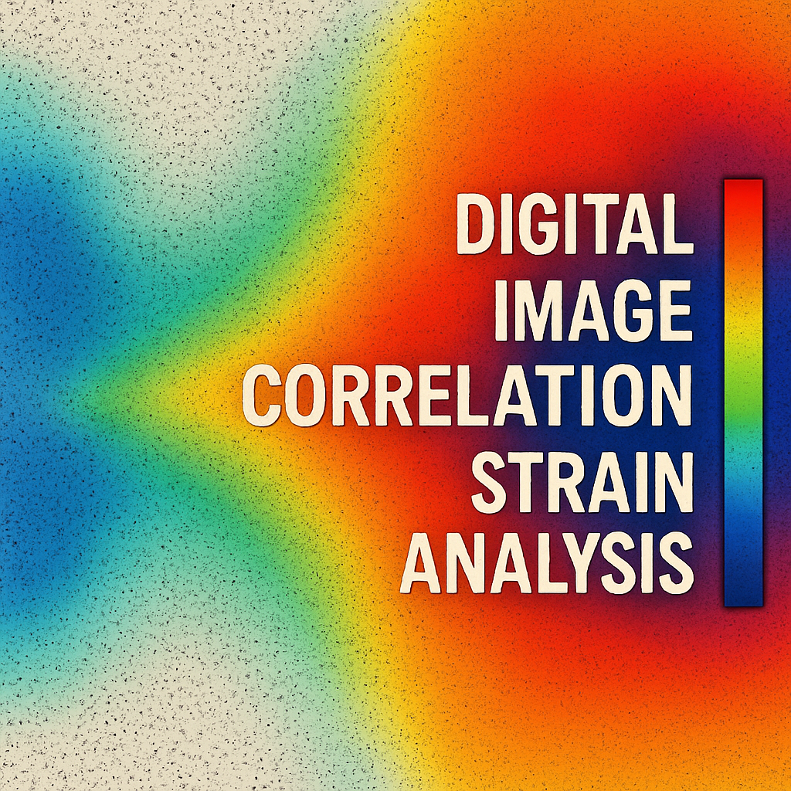
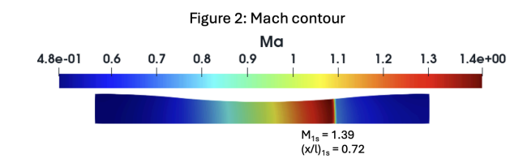

Projects
This section highlights some of the academic and personal projects I've been working on. More details will be added as the projects develop.

Served primarily as an Automation Engineer on a five-person capstone team sponsored by Toray Plastics. Designed and implemented the control and wiring system for a 4-inch diverter valve to be used to redirect polypropylene pellets between production lines. Programmed an Arduino Mega to drive a NEMA 34 stepper motor via DM860H driver, integrated LED indicators for feedback, and developed a Python GUI for operator control. Coordinated CAD prototyping and machining of stainless-steel parts. The design was developed in accordance with food safety and quality standards.
📄 Read Full Design Report
Investigated the large-deformation behavior of elastomers using Digital Image Correlation (DIC). Prepared dog-bone and disk specimens, applied speckle patterns, and conducted tensile and compression tests on an Instron machine. Processed synchronized images to obtain full-field strain maps, generated stress–strain curves, and compared elastic modulus values. Performed error analysis (camera alignment, lighting, speckle quality) to assess measurement reliability.
📄 Read Full Lab ReportBuilt a linear positioning stage with integrated safety and user-interface features. Programmed Arduino firmware for state-based motion (jog left/right, stop, auto-reverse on limit), wired limit switches, and added LED, buzzer, and 7-segment display indicators. Developed a Python GUI to send serial commands for operator control. Demonstrated safe motion behavior, reliable homing, and user-friendly interaction.
▶️ Watch Demo 📄 Read Full Report
Conducted a CFD study in OpenFOAM to analyze vortex shedding from a circular cylinder. Modeled laminar and turbulent regimes using k-ω SST and Spalart–Allmaras turbulence models, refined meshes, and applied appropriate boundary conditions. Extracted lift coefficient histories, performed FFT for frequency analysis, and estimated Strouhal numbers for validation against literature values. Strengthened skills in transient CFD simulation, turbulence modeling, and post-processing.
📄 Read Full White Paper
Performed experimental analysis of wind shear stress in a closed-circuit wind tunnel using a sweep plane instrument. Calibrated sensors, aligned the measurement system, and collected velocity profile data across multiple locations. Derived shear stress distributions and evaluated correlations between flow conditions and aerodynamic loading. Developed practical skills in experimental aerodynamics, instrumentation, and data interpretation.
📄 Read Full Lab Report
Simulated compressible flow in a converging–diverging nozzle using OpenFOAM to study normal shock formation at varying back pressures. Generated Mach contour plots and compared thermodynamic properties with control volume analysis. Achieved less than 7.5% error in validation metrics, with minor discrepancies in post-shock pressure due to mesh resolution. Reinforced expertise in compressible CFD, boundary condition setup, and quantitative error analysis.
📄 Read Full Report